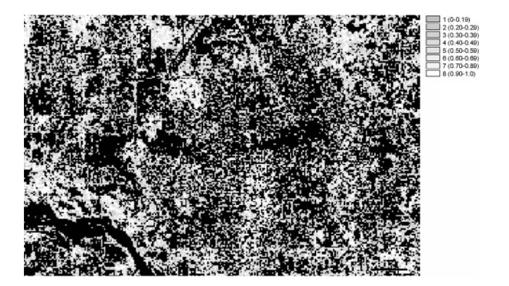
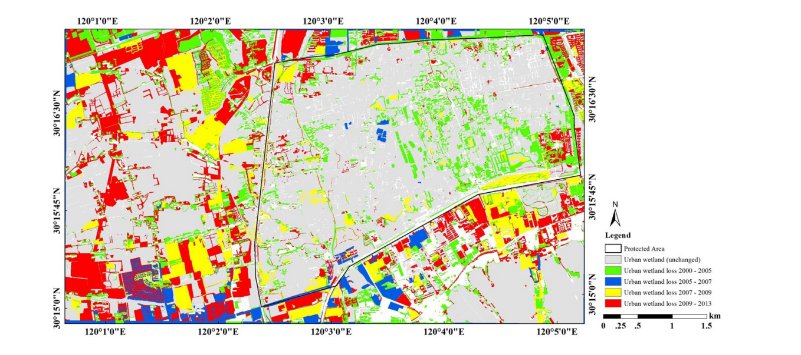

week7
In this week we will look at some more advanced classification methods and how to do change detection.
1 Summary
1.1 sub-pixel analysis
Sub-pixel analysis is a technique used primarily in the field of image processing and remote sensing, which allows for the extraction of information from images at a finer resolution than the pixel size of the data. This method is particularly useful when the spatial resolution of an imaging sensor limits the level of detail that can be discerned in the image. By analyzing the variation of spectral information within a pixel, it’s possible to infer the presence and proportion of different materials or features that are smaller than the size of a single pixel.
1.2 Object-Based Image Analysis (OBIA)
Object-Based Image Analysis (OBIA) is an advanced method in the field of geographic information systems (GIS) and remote sensing, which involves segmenting an image into meaningful objects or groups of pixels rather than processing individual pixels. This technique is particularly useful for analyzing high-resolution imagery, where the spatial patterns and relationships between different elements within the image become significant.
1.2.1 Key Features of OBIA
Segmentation: The process begins with segmentation, dividing the image into segments or objects based on spectral similarity, texture, shape, and context. Each segment represents a group of pixels that are similar to each other and likely belong to the same feature on the ground.
Classification: After segmentation, each object is classified into different categories or classes based on its attributes and the relationships with neighboring objects. This classification can be done using various algorithms, including machine learning.
Analysis: OBIA allows for more sophisticated analyses, such as change detection, land use/land cover classification, and vegetation mapping. The analysis considers the attributes of the objects, such as their area, perimeter, shape, texture, and contextual relationship with other objects.
2 Application
2.1 Applications of Sub-pixel Analysis
2.1.1 Remote Sensing and Satellite Imagery: In remote sensing, sub-pixel analysis is used to identify materials, land use, or vegetation types within a single pixel, especially in cases where the area of interest is smaller than the spatial resolution of the satellite sensor. This can enhance the accuracy of land cover classification maps. SW Myint’s(2006) research demonstrates the application of subpixel classifiers with expert system rules to estimate the distribution of various vegetation types in urban areas. Using Landsat TM data from Norman, Oklahoma, the study investigated the correlation between the output of the subpixel classifier and reference data for different types of vegetation, including weeds, artificial grasses, riparian vegetation, trees, and plants. Agriculture. Results showed that artificial grass and agriculture had the highest correlations with reference data, indicating the reliability of these categories.

2.1.2 Environmental Monitoring: It helps in monitoring changes in environmental features, such as deforestation, water quality, or urban sprawl, by detecting subtle changes in the spectral signatures within pixels over time. For example, Ibrahima Sall et al.(2021) used sub-pixel analysis techniques of Landsat imagery to estimate inundation of small water bodies, which included long-term trends in surface waters and assessment of common aridity indices.
2.1.3 Agriculture: Farmers and agronomists use sub-pixel analysis to assess crop health, soil moisture levels, and to detect pest or disease outbreaks, enabling precise application of water, fertilizers, or pesticides.
2.1.4 Medical Imaging: In medical imaging, sub-pixel resolution can improve the detection and analysis of features within tissues or organs, aiding in the early diagnosis of diseases.
2.1 Applications of OBIA
Hu, T. et al.(2018) presents a detailed study on the use of object-based image analysis (OBIA) and nearest neighbor classification to map and monitor land use and cover (LULC) changes in the Hangzhou Xixi Wetland, China, over a period from 2000 to 2013. The study highlights the advantages of using multi-temporal high spatial resolution satellite imagery combined with OBIA for accurate and economical mapping and analysis of changes in LULC over time.

3 Reflection
3.1 OBIA
One of the most compelling aspects of OBIA is its ability to incorporate context and spatial relationships into the analysis. This capability is particularly crucial in applications like urban planning, where the arrangement and relationships between features (e.g., buildings, roads, vegetation) are as important as the features themselves. However, the learning curve for OBIA can be steep, primarily due to the complexity of choosing appropriate segmentation parameters and the subjective nature of defining what constitutes an “object” in various contexts.
3.2 Sub-pixel Analysis
Sub-pixel analysis, on the other hand, has opened my eyes to the nuanced details that can be missed in a conventional pixel-based approach, especially in high-resolution imagery where mixed pixels are common. This technique’s ability to estimate the fractional coverage of different land cover types within a single pixel is invaluable for fine-scale environmental monitoring, such as tracking the extent of wetland inundation or the fragmentation of habitats.
The precision that sub-pixel analysis offers comes with its own set of challenges, notably in selecting pure endmember spectra and dealing with the inherent assumption of linear mixing within a pixel. The process of accurately identifying and extracting these endmembers from an image can be complex and is critical for the success of the analysis. This complexity underscores the importance of a solid understanding of the spectral characteristics of different materials and the conditions under which they were imaged.
3.3 General
Learning about these techniques has highlighted the evolving nature of remote sensing technology and its growing potential in addressing complex spatial problems. It also underlines the significance of interdisciplinary knowledge, bridging the gap between technological capabilities and domain-specific applications.
In conclusion, the journey through OBIA and sub-pixel analysis has been enlightening, challenging preconceived notions of what is visible and measurable from remote sensing imagery. It emphasizes the dynamic interplay between technological advancements and methodological innovation, driving home the point that as our tools grow more sophisticated, so too must our approaches to analyzing and interpreting the data they provide.